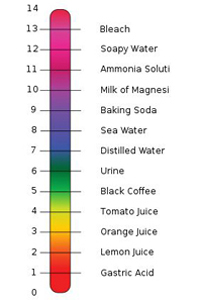

pH is a logarithmic measure of the effective concentration of hydrogen ions in a solution, pH = -log [H+]. pH is a measure of the acidity (or basicity) of a solution, where values of 0 to 14 are possible. Acidic solutions have a pH < 7. E.g. pH value of urine is around 6, orange juice around 3 and lemon juice around 2. Alkaline (also called basic) solutions have pH > 7. E.g. pH in solution of baking soda is 9, soapy water is 12 and bleach is 13. Neutral solutions have pH = 7. High acidity or alkalinity can cause direct physical damage to skin, gills and eyes of fish. If wide pH swings were to occur in ponds, lakes and the seas, for various biochemical reasons, fish and other organisms would not survive. Changes in pH affect the toxicity of many dissolved compounds. For example, ammonia becomes more toxic as pH increases.
pH scale. (This is a file from Wikimedia Commons.) http://creativecommons.org/licenses/by/3.0/deed.en